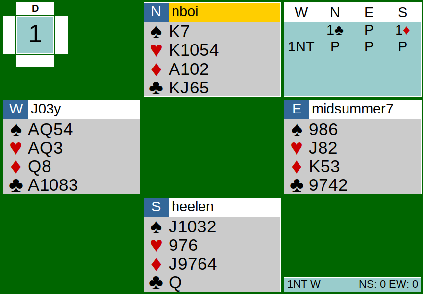
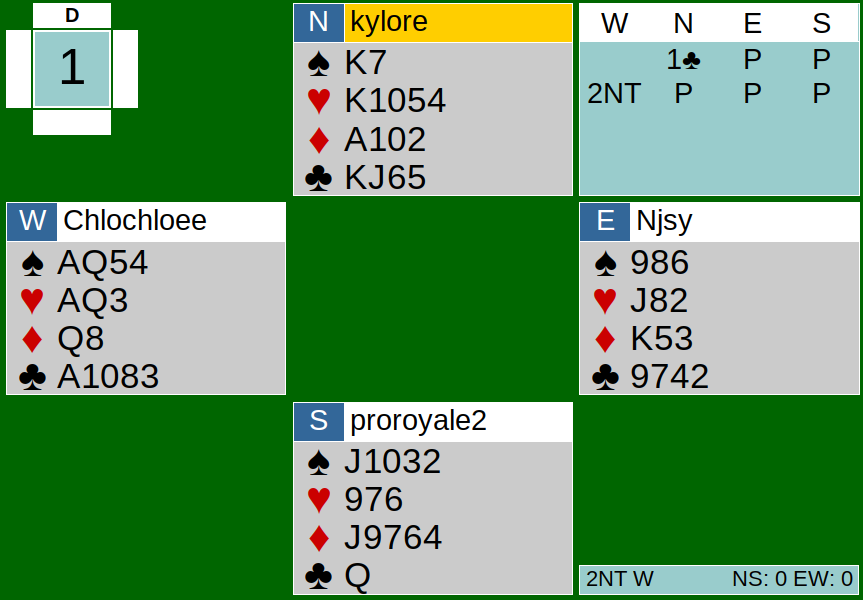

The team game on Saturday, June 6th, was a close one. Team Potatoes (Nathan, Chloe, Helen, and Nancy) barely pulled off their win against Team Tomatoes (Joe, Joey, Aldwyn, and Kyle).
{kind=link}

{kind=link}

Today, we are analyzing board one. Bidding at the Potatoes’ table was pretty simple. North, with fourteen points opened with one club. This was a reasonable bid because North had fourteen points and no five card major. East then passed and South made a response with an extremely weak hand. West, with twenty points, bid one NT, which in my opinion was an underbid because 1NT would show 15-18 points and 2NT would be Unusual 2NT. West should have doubled and then bid NT to show his points. However, 1NT turns out to be one of the only positive contracts for EW.
In the play, North led a diamond. All players played fairly well, and everyone took the tricks they were supposed to. One play worth mentioning is that South’s spade pitch on trick 5 may have allowed West’s fourth spade to be good. It would have only mattered if West decided to finesse South’s Jack of spades with the 9 on the board on trick 10. If West hadn’t tried finessing the J of spades on trick 10 and South didn’t pitch the 3 of spades on trick 5, then the last spade trick would have gone to South’s Jack of spades. This board should only make 1 if played correctly because of the poor points distribution, making all finesses impossible for declarer, and making it hard to play aces without the thought of losing the control of the suit to the king of the suit.
At the Tomatoes’ table, the bidding also started off with 1C by North. After both East and South’s passes, West bid 2NT, which they believed showed a strong hand.
The play begins with North’s opening lead of the 4 of clubs. This is a pretty solid lead: fourth best from North’s club suit. It didn’t make a difference between the diamond lead and the club lead in this case though; both EW lost 2 diamonds and 2 clubs. Both EW also lost one heart trick. However, at the Tomatoes’ table, West was able to make 3 (9 tricks) for two reasons, both having to deal with the spade suit. One being that when North gained control after winning with the KH on trick 8, North led a low spade from Kx. This allowed West to win with the Queen of spades, and the next time a spade was led, the King would fall to the Ace of spades. Another trick was lost when South pitched 2 spades. South should have pitched the diamonds instead of the 2 spades because EW had their K and Q set up already (from North’s ace play in second hand on trick 2). Pitching the 2 spades allowed West’s third and fourth spades to be set up without guessing the spade position.
Overall, all players’ bids and plays were reasonable. Potatoes made 2NT+1 while the Tomatoes made 1NT. This result gave Team Potatoes 2 IMPS. This board was really an intense start to Saturday’s team game.
Link to Hands: http://webutil.bridgebase.com/v2/tview.php?t=5076-1591484572&u=heelen